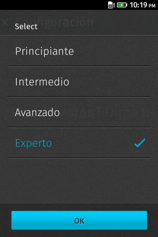
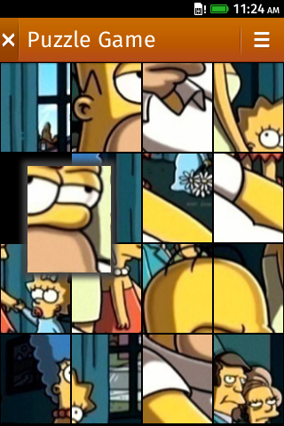

Disfruta Firefox OS, crea tu propia aplicación!
{
"name": "Puzzle",
"description": "Puzzle Game",
"type": "certified",
"permissions": {
"settings":{ "access": "readonly" }
},
"launch_path": "/index.html",
"developer": {
"name": "Cristian Rodríguez de la Cruz"
},
"locales": {
"en-US": { "name": "Puzzle", "description": "Puzzle Game" }
},
"default_locale": "en-US",
"icons": {
"60": "/style/icons/puzzle.png"
},
"orientation": "portrait-primary"
}
var activity = new MozActivity({
name: 'pick',
data: {
type: 'image/jpeg',
width: window.innerWidth - (2 * Game.rows),
height: window.innerHeight - OFFSET_TOP - (2 * Game.rows)
}
});
activity.onsuccess = function success() {
Game.start(URL.createObjectURL(this.result.blob), function done() {
gameView.dataset.pagePosition = 'viewport';
});
};
activity.onerror = function error() {
window.console.error('Error picking a picture: ', activity.error);
};
<!-- Localization --> <link rel="resource" type="application/l10n" href="locales/locales.ini"> <script type="application/javascript" src="js/l10n.js"></script>
https://github.com/mozilla-b2g/gaia/blob/master/shared/js
@import url(puzzle.en-US.properties) [es] @import url(puzzle.es.properties) [fr] @import url(puzzle.fr.properties)
game-title = Puzzle Game
difficulty-msg = The difficulty is {{difficulty}}
game-title = El juego del Puzzle
difficulty-msg = La dificultad es {{difficulty}}
<h1 data-l10n-id="game-title">Puzzle Game</h1>
var _ = navigator.mozL10n.get;
var message = _('difficulty-msg', { difficulty: 7 });
navigator.mozL10n.ready(function localize() {
// La UI ha sido traducida
});
 